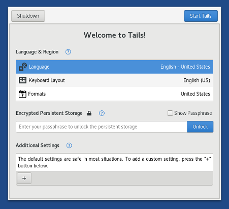

Siamo molto orgogliose di presentare Tails 3.0, la prima versione di Tails basata su Debian 9 (Stretch). Questa porterà una esperienza di avvio e spegnimento totalmente diversa, un po di estetica sul desktop, miglioramenti di sicurezza in profondità, e aggiornamenti alle nuove versioni stabili di un sacco di software inclusi.
Debian 9 (Stretch) will be released on June 17. It is the first time that we are releasing a new version of Tails almost at the same time as the version of Debian it is based upon. This was an important objective for us as it is beneficial to both our users and users of Debian in general and strengthens our relationship with upstream:
- I nostri utenti possono beneficiare più rapidamente dei grandiosi cambiamenti in Debian.
- Noi possiamo trovare e sistemare gli errori nella nuova versione di Debian mentre è ancora in sviluppo così che Debian possa presto beneficiare del nostro lavoro.
Questa versione aggiusta anche molti buchi di sicurezza e gli utenti dovrebbero avanzare di versione al più presto possibile.
Cambi
Nuove funzionalità
Nuova esperienza di avvio e di spegnimento
- Tails Greeter, l'applicazione per configurare Tails all'avvio, è stata completamente rivista per un uso più semplice:
- Tutte le opzioni sono disponibili in una sola finestra.
- La scelta dell'impostazione della lingua e della località sono mostrate per prime per favorire l'audience internazionale.
- Le funzioni di accessibilità possono essere attivate dall'avvio.
This has been a long process, started three years ago with the UX team of NUMA Paris and lead only by volunteers. Join us on tails-dev@boum.org to participate in future designs!

- L'eperienza della procedura di spegnimento è stata ridisegnata per essere:
- Più affidabile. Crashava su vari computer con risultati imprevedibili.
- Più discreta. Lo schermo è ora totalmente nero per sembrare meno sospetto.
Tecnicamente parlando, ora si sta usando la feature freed memory poisoning del kernel Linux.
Estetica del desktop
Ci siamo spostati sulla tema di default nero di GNOME che ha un look più moderno e discreto:

Tails 3.0 beneficia di molte altre piccole migliorie introdotte dal desktop GNOME:
Files è stato riprogettato per ridurre l'ingombro e rendere l'interfaccia più facile da usare. Diverse nuove caratteristiche sono state aggiunte, come la possibilità di rinominare multipli file in un colpo solo e la possibilità di estrarre file compressi senza aver bisogno di una applicazione a parte.

Le notifiche sono state migliorate per permettere un facile accesso ai messaggi precedenti. I popup delle notifiche sono stati anche riposizionati per fare in modo che siano più evidenti.

Finestre con le scorciatoie (keybord's shortcut) sono state aggiunte per scoprire le scorciatoie da tastiera nelle applicazioni di GNOME.
Per esempio, schiaccia Ctrl+F1 in Files per mostrare la sua finestra delle scorciatoie.
Miglioramenti di sicurezza in profondità
Tails 3.0 works on 64-bit computers only and not on 32-bit computers anymore. Dropping hardware support, even for a small portion of our user base, is always a hard decision to make but being 64-bit only has important security and reliability benefits. For example, to protect against some types of security exploits, support for the NX bit is compulsory and most binaries are hardened with PIE which allows ASLR.
Avvia una qualunque versione di Tails.
Per aprire un terminale scegli .
Esegui il seguente comando per mostrare le informazioni di sistema:
uname -mSe l'output è
x86_64, il tuo computer è a 64-bit e Tails 3.0 dovrebbe avviarsi.Se l'output è
i686, il tuo computer è a 32-bit e Tails 3.0 non si avvierà.
- Update Tor Browser to 7.0.1 (based on Firefox 52 ESR) which is multiprocess and paves the way to content sandboxing. This should make it harder to exploit security vulnerabilities in the browser.
Aggiornamenti a nuove versioni stabili dei software inclusi
- Most included software has been upgraded in Debian 9, for example:
- KeePassX from 0.4.3 to 2.0.3
Your password database will be migrated automatically to the new format of KeePassX 2. - LibreOffice from 4.3.3 to 5.2.6
- Inkscape from 0.48.5 to 0.92.1
- Audacity from 2.0.6 to 2.1.2
- Enigmail from 1.8.2 to 1.9.6
- MAT from 0.5.2 to 0.6.1
- Dasher from 4.11 to 5.0
- git from 2.1.4 to 2.11.0
- KeePassX from 0.4.3 to 2.0.3
Aggiornamenti e cambiamenti
L'icona della barra delle applicazioni di Pidgin è stata rimossa dalla barra di navigazione in alto e rimpiazzata da un popup di notifica.

Icedove è stato rinominato Thunderbird, il suo nome originale, ereditando questo cambiamento da Debian.
The search box and the search feature of the address bar of the Unsafe Browser were removed. (#12540)
L'opzione read-only sulla partizione persistente è stata rimossa. Era usata da pochi utenti, creava confusione, e portava a problemi inaspettati. (#12093)
Problemi risolti
Il nuovo server grafico X.Org in Tails 3.0 dovrebbe lavorare su un maggior numero di nuovo hardware grafico.
Il boot da UEFI è stato riparato in alcune macchine (ThinkPad X220).
Il mascheramento del MAC address è stato aggiustato in alcune interfacce di rete (TP-Link WN725N). (#12362)
Per maggiori dettagli, leggi il nostro changelog.
Problemi noti
Tails Installer erroneously rejects some USB sticks. When this happens, a message that starts with "Skipping non-removable device" is displayed (#12696). To workaround this problem:
Start the operating system you want to use Tails Installer on.
If you want to use Tails Installer in Tails 3.0, set up an administration password.Choose to open a terminal with administration rights.
Execute the following command to fix the bug in Tails Installer:
perl -pi -E 's,media_removable,removable,' /usr/lib/python2.7/dist-packages/tails_installer/creator.py
Tails Installer should not expose this problem again… until you restart Tails, as these changes will be reverted upon restart.
Tails fallisce l'avvio in alcuni computer con hardware grafico Intel.
Some users have reported problems during the migration from Icedove to Thunderbird, in particular that Thunderbird doesn't start.
If this happens to you, please send us a WhisperBack report without restarting Tails.
Vedi la lista dei problemi noti da tempo.
Ottieni Tails 3.0
Per installare, segui le nostre istruzioni per l'installazione.
Per l'aggiornamento, tutti gli utenti devono fare l'avanzamento manuale.
Cosa arriverà nelle prossime versioni?
Tails 3.1 è prevista per l'8 agosto.
Dai un'occhiata alla nostra tabella di marcia (in inglese) per sapere a cosa stiamo lavorando.
Abbiamo bisogno del tuo aiuto e ci sono molti modi per contribuire a Tails (Donare è soltanto uno di questi). Vieni a parlare con noi!